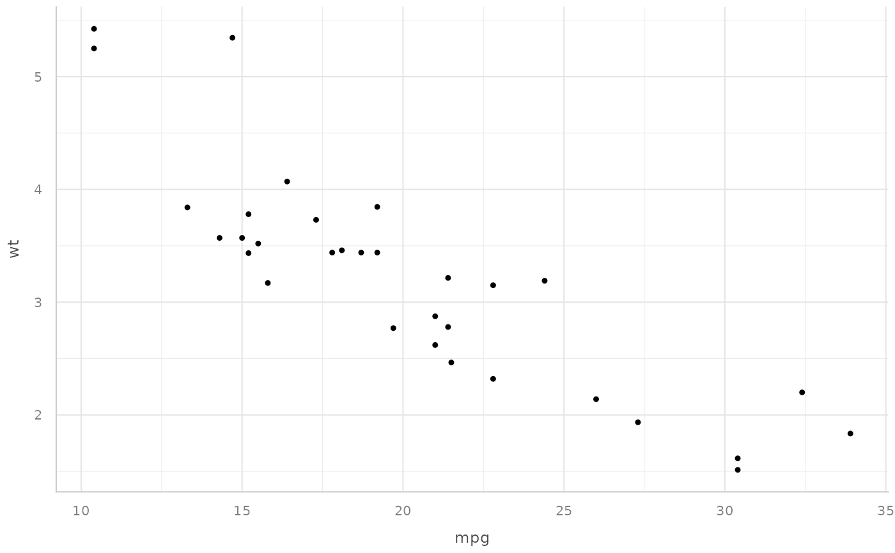

see::theme_lucid() with the sizing and legend conventions used across
colleyRstats figures. Every text element is expressed as a multiple of
base_size rather than in absolute points, which is what lets the same
theme serve a 3.33 in journal column and a full-width figure: only
base_size changes.
Arguments
- base_size
Base font size in points. Default 17, which reproduces the sizes colleyRstats used before this function was factored out.
- base_family
Base font family, passed to
see::theme_lucid().
Details
Sizing text in absolute points is the usual reason a figure comes out
unreadable. Point sizes do not shrink when the canvas does, so a theme tuned
on a large canvas puts 20 pt axis titles on a 3.33 in figure, where they
overrun the panel and the axis labels collide. Choose base_size from
the size the figure is finally PLACED at – roughly the body-text size of the
document, or a point or two below it. save_paper_figure() does this for you.
The multipliers are, relative to base_size: axis titles 1.15, axis
text 1.0, plot title 1.65, subtitle 1.0, legend text 0.9, caption 0.8, strip
text 1.3.
Examples
# \donttest{
if (requireNamespace("see", quietly = TRUE)) {
ggplot2::ggplot(mtcars, ggplot2::aes(mpg, wt)) +
ggplot2::geom_point() +
colley_theme(base_size = 8) # sized for a single journal column
}

# }